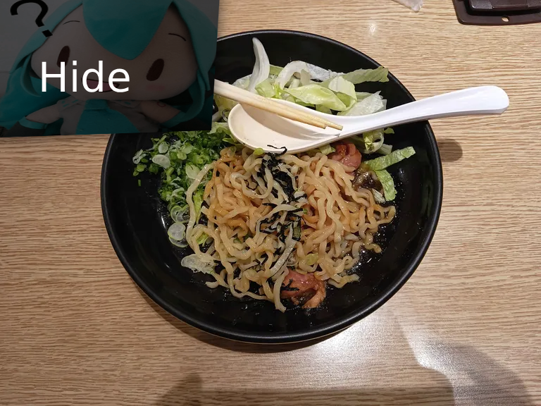
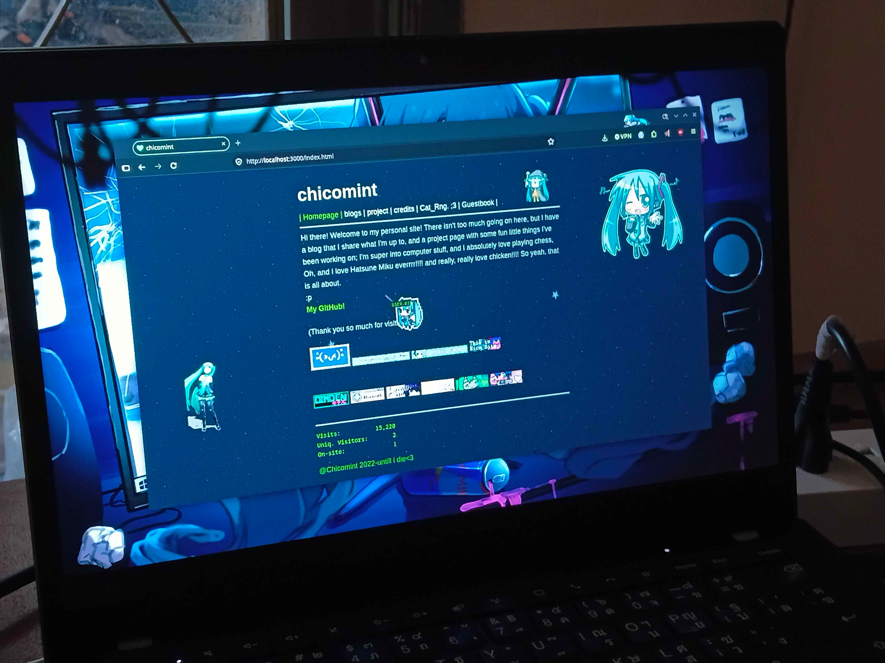

Yo, my school have a long break! Finally!! Anyway, affter I clear the school stuff. I hang out with my friend, We eat stuff, play the game. We play (Pump It Up) I want to play "Jubeat" so much, it's like a osu, you know. :p but they take it out for a long time ago. And shoping! I want to buy a spaghetti sauce but I don't have a cash, and 2 of my friend they want to go back home first. Only have 3 left. Then we went go to the game center again. That is it.
I'm mostly free now, so I uptate my website, as you can see and also you can see other people cursor too if they on my site. And my imageboard, someone complain about the site force to enable js. I'm free now so I fixed it. I know it hard to make a trust, anyway, now you can hang around by distable js on the browser ^^